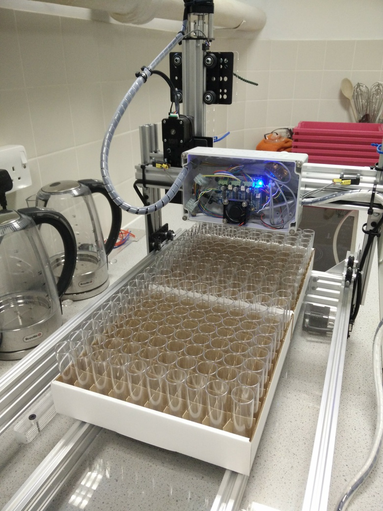
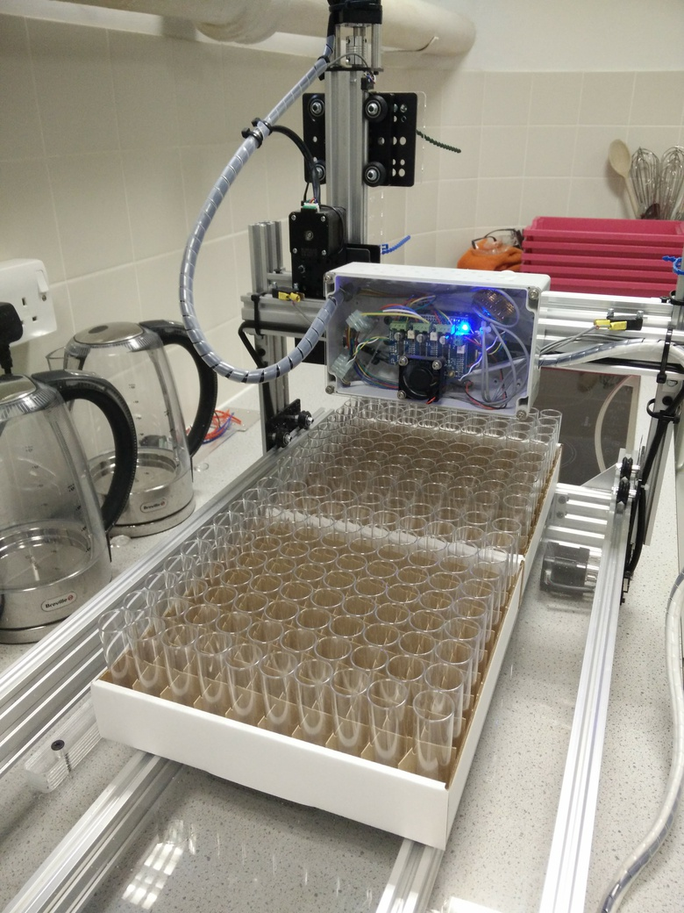

5 Program robot to fill vials
Running job without GUI - for testing
5.1 Overview
The movement of the robot is programmed in G-code. We only need nine G-code commands to control the robot (table 5.1).
| Code | Description |
|---|---|
| x | absolute position of x-axis |
| y | absolute position of y-axis |
| z | absolute position of z-axis |
| g4 | dwell time (control parameter p specifies seconds) |
| m3 | set pump rotation to clockwise |
| m4 | set pump rotation to counter clockwise |
| m8 | start pump |
| m9 | stop pump |
| $h | initiate homing cycle |
A G-code program for filling vials of food could be created manually, by listing the necessary commands sequentially in a text file. However, this would be laborious and error prone. If the size of the boxes of vials are known, the G-code can be programmatically generated.
5.2 Determine box coordinates
 

Figure 5.1: Loading boxes of vials.
First we need to determine the Cartesian coordinates of vials in diagonally opposite corners of each box.
- Load boxes onto the platform of the robot (figure 5.1).
- The first box should be flush with the fence and the guide rail.
- The second box should be flush with the first and the guide rail.
- The boxes we are using have a pair of double-thickness side-walls and a pair of single-thickness side-walls. The pairs are on opposite sides of the box. With this type of box it is important to note the orientation of the boxes when the Cartesian coordinates of the vials are determined, because the same orientation must be used when filling vials with food. We load the boxes with a double-thickness side-wall facing forwards.
- Login to raspberry pi using ssh. My raspberry pi has the IP address 192.168.1.3 and so I would use:
ssh pi@192.168.1.3- Default password for the pi user account is ‘raspberry’.
Use minicom to connect to the Grbl controller running on the Arduino, so that we can interactively control the robot from the command line:
sudo minicom -D /dev/ttyACM0 -b115200Make sure nozzle is at ** home ** position by issuing homing command:
$hFirst we will determine the Cartesian coordinates of the vial in the front left corner of the first box.
Make small movements in X and Y until the nozzle is centred over this vial, e.g.:
x-8 y-8Lower the nozzle in small increments until it is just 2-3mm above the the top of the vial (figure 5.2), e.g.:
z-20Query the current X, Y and Z coordinates by issuing the following command:
?Make a note of all three coordinates.
Figure 5.2: Nozzle positioned over the front left vial in box 1.
- Issue G-code commands to move the nozzle laterally until it is over the back right vial of the first box (figure 5.3).

Figure 5.3: Nozzle positioned over the back right vial in box 1.
- Use
?command to query nozzle position, and make a note of the X and Y coordinates:
- Move the nozzle laterally until it is over the front left vial of the second box (figure 5.4), then record X and Y coordinates.
Figure 5.4: Nozzle positioned over the front left vial in box 2.
- Finally determine the X and Y coordinates of the back right vial in the second box (figure 5.5).

Figure 5.5: Nozzle positioned over the back right vial in box 2.
5.3 Calibrate pump
The peristaltic pump is started and stopped using the m8 and m9 G-code commands, respectively (table 5.1). To maximize speed, the pump will be run at its maximum flow rate of 30ml/second. In our fly facility, we add 9ml of food to each vial, therefore based on the maximum flow rate, we should only need to run the pump for 0.3 seconds to dispense 9ml of food. However, there is latency in the system and the pump does not reach its maximum flow rate instantaneously on activation. Therefore, it is important to determine the fill time empirically. We do this by programming the robot to test fill a single box of vials using a range of fill times. The calibrate_pump.py script downloaded to the Raspberry Pi in stage 3.6 can be used to generate the appropriate G-code program.
Open calibrate_pump.py for editing:
sudo nano /home/pi/robot/py/calibrate_pump.pyNear the top of the file (line 32 onwards) are various settings to be modified:
# SETTINGS
# filename
filename = '/home/pi/robot/nc/calibrate_pump.nc'
# home/datum + homing pull-off (mm) (value of Grbl setting $27)
x_home = -5
y_home = -5
z_home = -5
# z value providing minimal clearance between nozzle and top of vials
z_fill = -62
# peristaltic pump settings
min_fill_time = 0.3
max_fill_time = 0.6
# pause to allow for drips before moving to next vial
drip_pause = 0.1
# vial coordinates (x,y)
frontLeft = (-8,-14)
backRight = (-236,-240)
nrows=10
ncols=10- The filename is the full path to the G-code file that will be generated by the python script.
- The parameters x_home, y_home and z_home are the Cartesian coordinates of the home position (i.e. home/datum + homing pull-off (mm)).
- Modify z_fill to the appropriate nozzle height for filling vials (this was determined in step 5 of section 5.2).
- The min_fill_time should be set to our estimate of fill time based on the pump’s specified flow rate. We will set max_fill_time to twice the value of min_fill_time.
- The vial coordinates (frontLeft and frontRight) are those determined for the front left and back right vials in the first box (refer to steps 5 and 6 of section 5.2).
- Our boxes have ten rows, each containing ten vials, so we set nrows and ncols to 10.
After editing the settings in calibrate_pump.py, run the script to generate a G-code program:
./robot/py/calibrate_pump.pyThis will generate a G-code program: /home/pi/robot/nc/calibrate_pump.nc which will iteratively increase the fill time for each successive row of vials. The min_fill_time will be used for the first row of vials and the fill time will be increased by (max_fill_time - min_fill_time) / (nrows - 1.0) for each successive row (e.g. table 5.2). Note that the fill times are rounded to the nearest 100th of a second. The fill time for each row is listed in the comments at the top of the /home/pi/robot/nc/calibrate_pump.nc file; to view this information run:
head -n12 ~/robot/nc/calibrate_pump.nc
| Box Row | Fill Time |
|---|---|
| 1 | 0.30 |
| 2 | 0.33 |
| 3 | 0.37 |
| 4 | 0.40 |
| 5 | 0.43 |
| 6 | 0.47 |
| 7 | 0.50 |
| 8 | 0.53 |
| 9 | 0.57 |
| 10 | 0.60 |
Send the G-code pump-calibration program to the Grbl controller /home/pi/robot/py/stream2.py can be used to stream a text file of G-code commands to Grbl:
./robot/py/stream2.py robot/nc/calibrate_pump.nc /dev/ttyACM0Once the robot has completed the calibration run and returned the nozzle to the home position, inspect the fill level in each row of vials. Identify the row in which vials are filled with the desired volume of food and then refer to the /home/pi/robot/calibrate_pump.nc file to find out the fill time used for that particular row.
5.4 Generate G-code
Once the pump has been calibrated we are ready to generate the G-code instructions for the routine filling of vials. The fill_boxes.py script downloaded to the Raspberry Pi in stage 3.6 is used to generate two G-code programs:
- 1_box.nc - fill one box of vials
- 2_boxes.nc - fill two boxes of vials
Open fill_boxes.py for editing:
sudo nano /home/pi/robot/py/fill_boxes.pyNear the top of the file (line 32 onwards) are various settings to be modified:
# SETTINGS
# modify values of variables in this section to match your system
# filenames
filename1Box = '/home/pi/robot/nc/1_box.nc'
filename2Boxes = '/home/pi/robot/nc/2_boxes.nc'
# home/datum + homing pull-off (mm) (value of Grbl setting $27)
x_home = -5
y_home = -5
z_home = -5
# z value providing minimal clearance between nozzle and top of vials
z_fill = -62
# peristaltic pump settings
fill_time = 0.43
# pause to allow for drips before moving to next vial
drip_pause = 0.1
# vial coordinates (x,y)
box1FrontLeft = (-8,-14)
box1BackRight = (-236,-240)
box2FrontLeft = (-8,-286)
box2BackRight = (-236,-513)
nrows=10
ncols=10
nVials=nrows*ncols- filename1Box and filename2Boxes specify the filename and full path to the two G-code programs that will be generated. You should not need to modify these values. The GUI script (/home/pi/robot/py/fly_gui.py) expects the two programs to have the default names and paths; if you alter the names or paths of these files, you will need to edit the GUI script.
- The parameters x_home, y_home and z_home are the Cartesian coordinates of the home position (i.e. home/datum + homing pull-off (mm)).
- Modify z_fill to the appropriate nozzle height for filling vials (this was determined in step 5 of section 5.2).
- fill_time was determined in the previous section 5.3.
- The default value of drip_pause should be appropriate for most systems.
- The vial coordinates (box1FrontLeft, box1BackRight, box2FrontLeft and box2BackRight) were determined in section 5.2.
- Our boxes have ten rows, each containing ten vials, so we set nrows and ncols to 10.
After editing the settings in fill_boxes.py, run the script to generate the two G-code programs:
./robot/py/fill_boxes.py